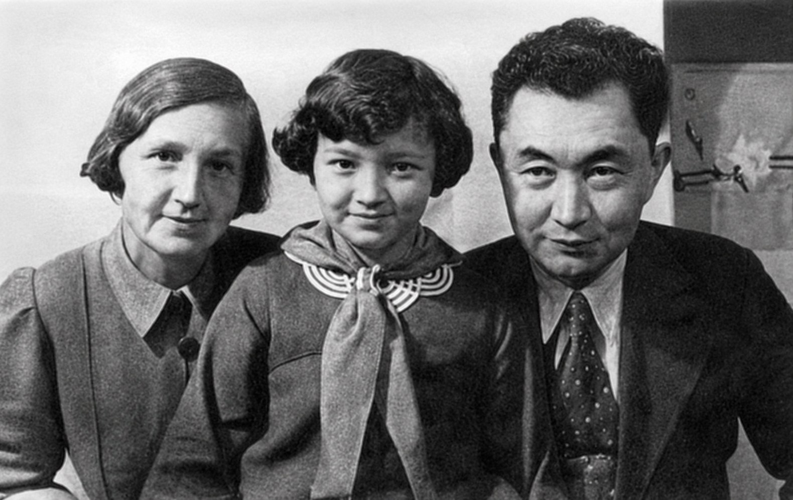
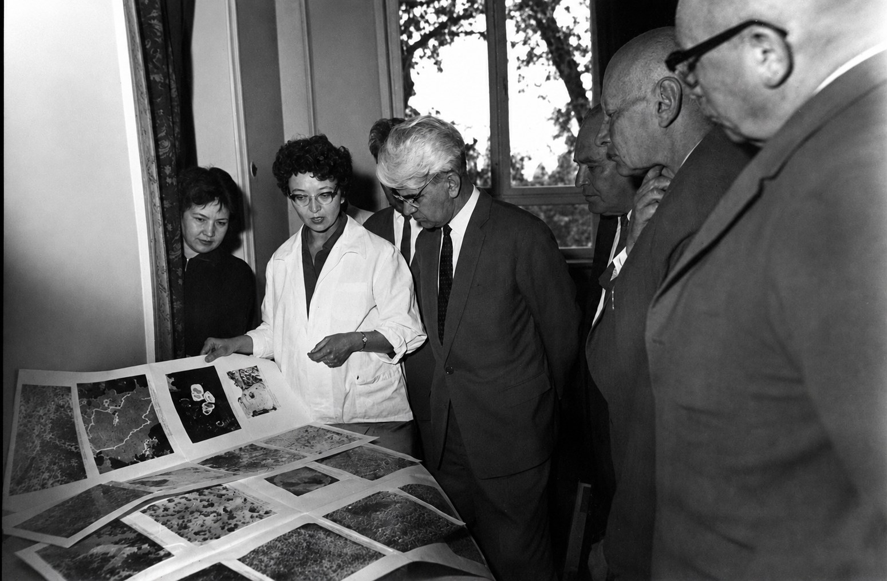
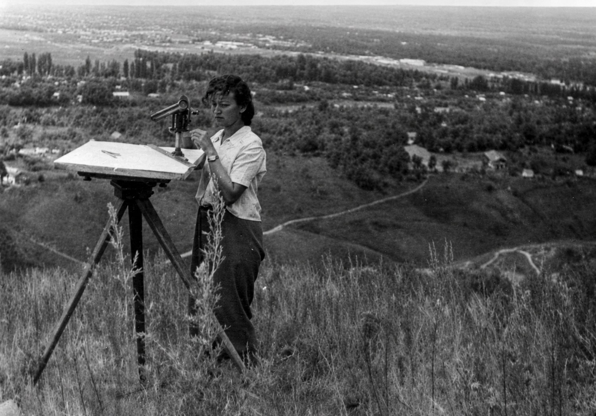

Полный текст
Меиз Сатпаева: Искусство видеть невидимое
Говорят, между отцом и дочерью существует особая связь. Иногда к этому добавляют красивую, хотя и слишком прямолинейную мысль: будто дочери особенно часто наследуют отцовский интеллект. Наука о наследовании человеческих способностей устроена куда сложнее подобных формул. И всё же, когда речь заходит о Меиз Канышевне Сатпаевой, избежать этого сравнения почти невозможно.
Её отец — Каныш Имантаевич Сатпаев.
Одного имени достаточно, чтобы возникла опасность: дальше всю биографию дочери читать как продолжение биографии великого отца. Именно поэтому интереснее сделать обратное — посмотреть на саму Меиз.
Что она замечала? Какие вопросы её занимали? Почему один минерал мог удерживать её внимание годами? Каким образом человек, начавший с микроскопических включений редкого элемента, в конце научного пути приходит к прогнозу целого рудного тела, скрытого под полукилометром горных пород?
И тогда выясняется: перед нами совсем не «дочь академика, тоже ставшая геологом». Перед нами исследователь. Причём исследователь в самом точном смысле этого слова.

Карсакпай. Начало
Меиз родилась 20 августа 1931 года в Карсакпае. И это обстоятельство для её будущей жизни значило, возможно, больше, чем кажется. Геология вошла в её сознание задолго до того, как стала профессией. Она сама вспоминала:
«Моё детство прошло среди образцов пород, а любимыми игрушками были „камни“»
Отец исследовал недра Центрального Казахстана, мать, Таисия Алексеевна, была профессиональным минералогом. Породы, минералы, экспедиции, разговоры о Земле составляли обычную ткань домашней жизни.
Но Карсакпай её воспоминаний — вовсе не суровая декорация, населённая исключительно людьми с молотками и геологическими картами. Там были праздники, музыка, драматический кружок, поездки в весеннюю степь, балы, образованные и увлечённые люди. Маленький промышленный посёлок жил внутри огромного процесса: Центральный Казахстан открывался стране буквально пласт за пластом.
Наверное, ребёнок редко понимает масштаб происходящего рядом. Для него большой исторический сюжет сперва состоит из мелочей. Из голосов взрослых. Из камней на столе. Из возвращения людей из экспедиции. Из названий мест, которые произносят дома так часто, что они кажутся чем-то почти семейным.
Так в жизнь Меиз вошла Земля — ещё до того, как появилась необходимость её объяснять.
От золотой медали — в поле
В 1949 году она окончила алматинскую школу № 36 с золотой медалью, поступила в Горный металлургический институт, а в 1954-м получила красный диплом. Можно было бы сразу начинать академическую карьеру. Но в семье существовало представление, которое сегодня звучит почти как методологический принцип: геолог обязан знать свой объект не только по книге и лабораторному препарату.
Поэтому сначала была работа.
Тюлькубасская геологоразведочная партия Центрально-Казахстанской экспедиции. Затем Южно-Казахстанская геофизическая экспедиция. Несколько лет настоящей производственной геологии — той, где порода сопротивляется описанию, маршрут оказывается длиннее карты, а красивое предположение ничего не стоит, если действительность устроена иначе. Только в 1960 году Меиз пришла в Институт геологических наук.
И, пожалуй, именно здесь начинается самое интересное.
Умение задерживаться возле деталей
Исследователя иногда представляют человеком, который знает больше остальных. Но большое исследование довольно часто начинается с противоположного ощущения: что-то не сходится.
Вроде бы объект известен. Его уже описывали. Существуют термины, классификации, методы. И вдруг появляется небольшая деталь, которой всё равно, насколько законченной казалась прежняя картина.
Меиз умела задерживаться возле таких деталей.
Однажды её заинтересовали оттенки борнита. Розоватый. Жёлтый. Оранжевый. Можно пройти мимо: минерал и минерал, обычная изменчивость окраски. Она спросила — почему?
В этом коротком «почему?» заключена едва ли не вся её научная биография.
«...наука, я в этом убеждена, начинается именно с любопытства. Кому ничего не интересно, тот никогда ничего не откроет»
Только любопытство здесь не следует понимать как праздное желание узнать забавный факт. Настоящее научное любопытство довольно быстро становится неудобным. Оно заставляет возвращаться к образцу. Сравнивать. Искать другой метод. Сомневаться в первом объяснении. Иногда тратить месяцы на то, что со стороны выглядит ничтожной подробностью.
Рений Жезказгана
Именно так в её научной жизни появился рений Жезказгана.
Когда в 1959 году в рудах месторождения было установлено присутствие этого редкого элемента, факт обнаружения на самом деле только открыл проблему. Где именно находится рений? В каких минералах? В какой форме? Как распределён? С какими фазами связан? Почему часть ценного компонента уходит при переработке?
Масштаб задачи почти парадоксален. Огромное месторождение пришлось изучать через образования, которые невозможно нормально рассмотреть невооружённым глазом.
Меиз работала со световой и электронной микроскопией, микрозондированием, рентгенографией микропроб. Джезказганит, ренийсодержащий минерал, встречался в настолько малых выделениях, что обычной техники приготовления препаратов оказалось недостаточно. Тогда она разработала специальную методику получения прицельных препаратов из полированных шлифов.
Этот эпизод стоит рассматривать шире его специального минералогического содержания.
Есть очень важная граница в мышлении. Когда мы чего-то не видим, можно решить, что там ничего нет. А можно предположить, что недостаточно хорош сам способ видеть.
Меиз выбрала второе.
Прибор в такой науке перестаёт быть просто оборудованием. Он становится продолжением вопроса. Если объект ускользает от глаза, совершенствуется глаз. Если старый метод не различает необходимое, исследователь ищет другой масштаб, другой препарат, другой способ измерения.
В 1968 году Меиз Канышевна защитила кандидатскую диссертацию, посвящённую структурно-морфологическим особенностям рудообразующих минералов богатых рениевоносных руд Джезказгана.

Месторождение как система
Но по-настоящему сильная исследовательская биография узнаётся ещё по одному признаку: ответ не закрывает тему. Он меняет размер следующего вопроса.
Рений привёл её к веществу руды вообще. Возникла проблема серебра, форм нахождения элементов, их связей с минералами, потерь при обогащении. Постепенно отдельный компонент перестал быть центром картины. Перед исследователем появилось месторождение как система.
Меиз беспокоила практика, при которой из сложного природного объекта выбирают прежде всего наиболее богатую и удобную часть. В этом был вполне практический экономический смысл, но для неё самой вопрос выглядел шире. Руда не создавалась природой для того, чтобы соответствовать технологической схеме человека. Вместе с главным металлом она содержит другие компоненты, связи, последовательности образования, следы процессов, происходивших задолго до появления шахты.
Если смотреть только на то, что выгодно извлечь сегодня, можно буквально не заметить часть месторождения.
Эта мысль особенно современно звучит сейчас, когда мировая геология вновь обсуждает критические минералы, комплексность сырья, полноту извлечения и снижение потерь. Для Меиз подобный взгляд был рабочей реальностью уже десятилетиями раньше.
И снова интересно проследить движение её мысли.
Сначала — крошечное включение.
Потом — минерал.
Потом — взаимоотношения минералов.
Затем — вещество руды.
А потом возникает вопрос, который уже невозможно решить одним микрозондом:
как сформировался сам Жезказган?
На глубину
В 1985 году Меиз Сатпаева обобщила многолетние исследования в монографии «Руды Джезказгана и условия их формирования». В 1987 году защитила докторскую диссертацию «Условия формирования и минералогические особенности промышленных месторождений медистых песчаников Казахстана». Её интерес теперь лежал глубже описания минерального состава: процессы рудообразования, структуры земной коры, движение рудоносных флюидов, возможная геодинамическая природа Жезказганской системы.
Это довольно красивый момент в истории любого серьёзного исследования.
Можно всю жизнь совершенствоваться в описании того, что уже найдено. Знать состав точнее, различать фазы лучше, уточнять детали.
А можно однажды спросить: почему всё это здесь?
И этот вопрос сразу меняет положение исследователя. Теперь недостаточно объяснить прошлое. Хорошая модель должна каким-то образом выдержать встречу с тем, чего ещё не видели.
Для геолога такая встреча особенно беспощадна.
Порода не знает, кто автор гипотезы. Ей безразличны научные степени, известность фамилии, красота концепции. Буровая скважина проходит вниз — и через некоторое время из глубины приходит ответ.
Есть или нет.
В последние годы научной деятельности Меиз Канышевна занималась скрытым оруденением глубоких горизонтов Жезказганского рудного поля. Одно из её предположений было проверено бурением в 2003–2005 годах. На глубине примерно 450–500 метров установили ранее не вскрытое рудное тело С-3. По приведённым в материалах данным, оно было прослежено примерно на 450 метров; ширина зоны оруденения составляла 85–120 метров, максимальная мощность — около 4,5 метра.

Искусство видеть невидимое
Пожалуй, именно здесь вся её научная жизнь неожиданно собирается в одну точку.
Молодая Меиз пыталась разглядеть редкий элемент, спрятанный внутри микроскопического минерального образования.
Много десятилетий спустя она пыталась увидеть уже другое невидимое — продолжение рудной системы за пределами непосредственного наблюдения, под сотнями метров породы.
Масштаб изменился почти невероятно.
Способ мышления остался узнаваемым.
Геология вообще имеет странные отношения с невидимым. Большая часть того, о чём говорит геолог, скрыта. Процесс рудообразования произошёл миллионы лет назад. Глубинную структуру нельзя целиком вынести на поверхность. Месторождение никогда не предстаёт перед человеком сразу, как готовая схема из учебника.
Приходится читать следы.
Один минерал способен сохранить историю раствора, из которого возник. Особенность структуры намекает на продолжение залежи. Соотношение элементов становится свидетельством процесса, который невозможно наблюдать непосредственно. Малое позволяет осторожно судить о большом — при условии, что связь между ними доказана.
Меиз была особенно сильна именно в таком переходе масштаба.
И, вероятно, поэтому название «Искусство видеть невидимое» подходит ей не как красивая юбилейная метафора, а почти буквально.
Незакрытые двери
Впрочем, есть ещё одна сторона её биографии, без которой портрет будет неполным.
Она понимала, что исследователь работает не в пустоте.
Нужны приборы. Коллекции. Люди, умеющие работать с ними. Архив. Память о предыдущих наблюдениях. Возможность вернуться через двадцать лет к старому образцу и задать ему вопрос, который во время его отбора ещё просто невозможно было сформулировать.
С её настойчивостью и научным авторитетом связывают приобретение Институтом современного микрозонда в 2003 году. Она прошла здесь путь от младшего до главного научного сотрудника, руководила лабораторией. По приведённым биографическим сведениям, её научное наследие включает 78 статей, две монографии и десятки научно-производственных отчётов.
И здесь мы снова возвращаемся к её отцу.
Меиз действительно много сделала для сохранения наследия Каныша Имантаевича: работала с архивами, участвовала в издании его трудов, Сатпаевских чтениях, мемориальном музее. В составе авторского коллектива, подготовившего восьмитомное собрание трудов К. И. Сатпаева, в 2003 году она получила премию его имени.
Но теперь отношение отца и дочери открывается немного иначе.
Научное наследование — странная вещь. Его легко спутать с почитанием. Сохранить бумаги. Поставить портрет. Повторять известные формулировки. Чем крупнее имя предшественника, тем сильнее соблазн превратить его выводы в окончательный ответ.
Однако живая научная школа устроена иначе. От предшественника наследуют не только найденное. Наследуют вопрос. Наследуют требовательность к факту.
Наследуют право однажды увидеть в старой модели то, чего она не объясняет, и попробовать пройти дальше. Вот в таком смысле Меиз действительно была дочерью Каныша Сатпаева. Не потому, что рядом с её именем стояла великая фамилия. И даже не потому, что её детство прошло среди геологов и минералов. Гораздо важнее другое: полученное знание не стало для неё местом, где можно остановиться.
«Наука начинается с любопытства»
В этой фразе почти нет торжественности. И это хорошо. Большие открытия вообще редко начинаются торжественно. Сначала человек просто замечает странный оттенок минерала. Задерживает взгляд чуть дольше, чем остальные.
И спрашивает:
почему?
Потом появляются микроскоп, расчёты, неудачи, новые методы, годы работы. Маленькое несоответствие постепенно разрастается в научную проблему. Ответ порождает другой вопрос. Приходится смотреть глубже. Иногда — буквально на полкилометра под землю.
И однажды Земля отвечает.
20 августа 2026 года Меиз Канышевне Сатпаевой исполняется 95 лет со дня рождения. Она ушла из жизни 30 июля 2007 года, но её биография удивительно плохо помещается в прошедшее время.
Потому что хороший исследователь оставляет после себя не только то, что успел узнать.
Он оставляет незакрытые двери.
Образец, который можно исследовать точнее. Гипотезу, которую можно проверить новым методом. Старую карту, которую можно сопоставить с цифровой моделью. Вопрос, до которого у следующего поколения наконец дорос инструмент.
Наверное, именно так и существует настоящая научная преемственность. Не как обязанность согласиться с предшественником. Как возможность продолжить его разговор с реальностью.
Меиз Сатпаева продолжала этот разговор всю жизнь.
Сначала держа в руках «камень».
Потом глядя в микроскоп.
А в конце — всматриваясь туда, где человеческий глаз уже ничего не видел, но исследовательская мысль всё ещё могла спросить у Земли:
что находится дальше?